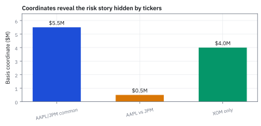
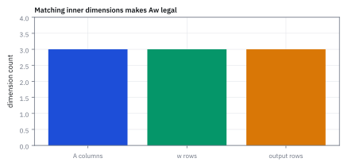

4.3 The Martingale Betting System
ทบเงินเดิมพันหลังแพ้ทำให้ชนะเกือบทุกรอบ แต่กำไรเฉลี่ยยังเป็นศูนย์ เพราะรอบที่แพ้รวดเสียมากพอจะหักล้างกำไรเล็ก ๆ ทั้งหมด
มีคนเสนอกลยุทธ์ต่อคณะกรรมการความเสี่ยง: เดิมพัน \$1,000 บนเกมที่ชนะหรือแพ้อย่างละครึ่ง แพ้แล้วทบเป็นสองเท่า ชนะเมื่อไรก็ได้กำไร \$1,000 แล้วเริ่มรอบใหม่ พอร์ตมีทุน \$1,000,000 ผู้เสนอโชว์ว่ากลยุทธ์ชนะมากกว่า 99.8% ของรอบ คณะกรรมการควรอนุมัติไหม
ลองตอบก่อนเปิดเฉลย
ไม่ควร ทุนหนึ่งล้านรองรับการทบได้แค่ 9 ขั้น ถ้าแพ้รวด 9 ครั้งจะเสีย \$511,000 ในรอบเดียว โอกาสคือ 1/512 หรือราว 0.195% ต่อรอบ กำไรเฉลี่ยต่อรอบคือ $\tfrac{511}{512}(1{,}000)-\tfrac1{512}(511{,}000)=998.05-998.05=0$ พอดี อัตราชนะ 99.8% เป็นจริง แต่ไม่ได้บอกอะไรเรื่องกำไร และถ้าเกมจริงมีความได้เปรียบของเจ้ามือแบบรูเล็ต ค่าเฉลี่ยจะติดลบราว \$271 ต่อรอบ
ภาพรวมก่อนลงสูตร
ระบบเดิมพันแบบทบ (doubling strategy ที่นักพนันเรียกว่า martingale) ทำงานแบบนี้: วาง $b$ แพ้แล้ววางสองเท่าของไม้ก่อน หยุดทันทีที่ชนะครั้งแรก ชนะครั้งเดียวก็คืนทุนทุกไม้ที่แพ้มาและได้กำไร $b$ เสมอ ถ้าเงินไม่จำกัด เราจะชนะแน่นอนในที่สุด ฟังดูเหมือนเงินฟรี
แต่ นิยามของ martingale บอกอีกเรื่อง: ในเกมยุติธรรม การเลือกขนาดเดิมพันจากผลที่เห็นแล้วสร้าง drift ไม่ได้ กำไรสะสม $W_n$ ของระบบนี้เป็น martingale ค่าเฉลี่ยจึงเป็นศูนย์ทุกเวลา แล้วเงินที่ “ได้แน่นอน” หายไปไหน คำตอบอยู่ในรูปด้านล่าง: รอบส่วนใหญ่จบที่ +\$1,000 แต่เส้นทางที่แพ้รวดดิ่งลงแบบทวีคูณ และเมื่อคูณขนาดกับโอกาสแล้ว ส่วนนั้นหนักเท่ากับกำไรเล็ก ๆ ทั้งหมดพอดี
หน้านี้จะพิสูจน์พีชคณิตของการคืนทุน หาว่าทุนจริงรองรับได้กี่ขั้น พิสูจน์ว่า $W_n$ เป็น martingale ดูการแจกแจงของหนึ่งรอบ แล้วตอบคำถามที่ลึกที่สุด: ทำไมการหยุดตอนชนะไม่ใช่ช่องโหว่ และทำไมทุนไม่จำกัดดูเหมือนชนะได้แค่บนกระดาษ
รูป — บันไดของการแพ้รวด: ตื้นในตอนต้น ดิ่งในตอนท้าย
ศัพท์ที่ใช้ในหัวข้อนี้
- Doubling strategy (ระบบเดิมพันแบบ martingale)
- แพ้แล้วทบเดิมพันเป็นสองเท่า หยุดเมื่อชนะครั้งแรก ใช้เป็นตัวอย่างคลาสสิกว่าการปรับขนาดเดิมพันไม่สร้างกำไรเฉลี่ยในเกมยุติธรรม
- รอบ และ ไม้
- หนึ่งไม้คือการเดิมพันหนึ่งครั้ง หนึ่งรอบเริ่มที่เดิมพันฐาน $b$ และจบเมื่อชนะครั้งแรกหรือเงินไม่พอวางไม้ถัดไป
- Stopping time $\tau$
- เวลาหยุดที่ ณ ทุกไม้ $n$ ตัดสินได้จากข้อมูลถึงไม้ $n$ ว่าหยุดแล้วหรือยัง ไม่ต้องรู้อนาคต “หยุดเมื่อชนะครั้งแรก” เป็น stopping time ส่วน “หยุดที่จุดสูงสุดของวัน” ไม่ใช่
- Optional stopping theorem
- ทฤษฎีที่บอกว่า martingale ที่หยุดด้วย stopping time ยังมีค่าเฉลี่ยเท่าค่าเริ่มต้น เมื่อเงื่อนไขครบ เช่นเวลาหยุดมีเพดานคงที่ ใช้พิสูจน์ว่ากลยุทธ์หยุดไม่สร้างกำไรเฉลี่ย
- Uniform integrability
- เงื่อนไขว่าหางของการแจกแจงเล็กพร้อมกันทุกเวลา ไม่มีมวลความน่าจะเป็นเล็ก ๆ ที่พาเงินก้อนใหญ่หนีไปไกล ใช้แยกกรณีที่สลับลิมิตกับค่าเฉลี่ยได้
- Martingale transform
- กำไรจากการวางเดิมพันขนาด $H_k$ ที่ตัดสินจากอดีตบนการขยับของ martingale $\sum H_k\,(X_k-X_{k-1})$ ซึ่งยังเป็น martingale เสมอ เป็นต้นแบบของ Itô integral
- House edge และ turnover
- house edge คือส่วนที่เจ้ามือได้เปรียบต่อเงินที่วาง turnover คือยอดเงินเดิมพันรวมทุกไม้ ใช้คำนวณขาดทุนคาดหมาย = house edge × turnover
สัญลักษณ์และหน่วย
| สัญลักษณ์ | ความหมาย | หน่วย |
|---|---|---|
| $b$ | เดิมพันฐานของไม้แรก | ดอลลาร์ |
| $B$ | ทุนที่ใช้ได้ในหนึ่งรอบ | ดอลลาร์ |
| $N$ | จำนวนไม้สูงสุดที่ทุนรองรับ | ไม้ |
| $L_k$ | ขาดทุนสะสมเมื่อแพ้ครบ $k$ ไม้ | ดอลลาร์ |
| $W_n$ | กำไรของรอบหลังไม้ที่ $n$ (ตรึงค่าไว้หลังหยุด) เริ่ม $W_0=0$ | ดอลลาร์ |
| $\tau$ | ไม้ที่ชนะครั้งแรก | ไม้ |
| $p$, $q$ | โอกาสชนะและแพ้ต่อไม้ | ไม่มีหน่วย |
ขั้นที่ 1 — ทำไมชนะครั้งเดียวคืนทุนทุกไม้
ข้ออ้างหลักของระบบคือ “ชนะเมื่อไรก็ได้ $b$” ต้องตรวจก่อนว่าพีชคณิตถูกจริง ถ้าแพ้ $k-1$ ไม้แรก ไม้ที่ $k$ วาง $b\,2^{k-1}$ ให้ $L_k$ เป็นขาดทุนสะสมเมื่อแพ้ครบ $k$ ไม้
บรรทัดที่สองคือท่าของอนุกรมเรขาคณิต: คูณผลรวมด้วยสองจะได้ $2+4+\cdots+2^k$ ลบผลรวมเดิมแล้วพจน์กลางหักกันหมด เหลือ $2^k-1$ บรรทัดที่สี่คือรอบที่ชนะครั้งแรกที่ไม้ $k$: ได้กำไรสุทธิของไม้นั้น $b\,2^{k-1}$ ลบขาดทุนของ $k-1$ ไม้ก่อนหน้า เหลือ $b$ พอดีไม่ว่า $k$ เท่าไร
ผลคือ $W_n$ มีได้แค่สองค่า: $+b$ ถ้าชนะแล้วภายใน $n$ ไม้ หรือ $-b\,(2^n-1)$ ถ้ายังแพ้อยู่ ในกรณีเดิมพันฐาน \$1 คือ $W_n$ เป็น 1 หรือ $1-2^n$ พีชคณิตถูกต้อง ปัญหาอยู่ที่เงื่อนไขแฝง: เราต้องวางไม้ที่ต้องการได้จริงทุกไม้
| ไม้ที่ $k$ | เดิมพัน (ดอลลาร์) | แพ้สะสม $L_k$ (ดอลลาร์) | กำไรรอบถ้าชนะที่ไม้นี้ |
|---|---|---|---|
| 1 | 1,000 | 1,000 | 1,000 |
| 2 | 2,000 | 3,000 | 1,000 |
| 3 | 4,000 | 7,000 | 1,000 |
| 5 | 16,000 | 31,000 | 1,000 |
| 7 | 64,000 | 127,000 | 1,000 |
| 9 | 256,000 | 511,000 | 1,000 |
| 10 | 512,000 | 1,023,000 | 1,000 ถ้ามีทุนพอ |
ขั้นที่ 2 — ทุนหนึ่งล้านรองรับได้กี่ขั้น
ทุนต้องพอจ่ายทุกไม้ตามเส้นทางที่แพ้รวด เงื่อนไขจึงเป็น $L_N\le B$ ไม่ใช่ $N\times b\le B$
โจทย์ให้อะไรมาบ้าง: $b=1{,}000$ และ $B=1{,}000{,}000$ ดอลลาร์
คำตอบ: 9 ขั้น หลังแพ้ 9 ไม้เสีย $L_9=511{,}000$ เหลือเงิน $489{,}000$ แต่ไม้ที่ 10 ต้องวาง $512{,}000$ จึงเดินต่อไม่ได้ เราเรียกเหตุการณ์นี้ว่า บันไดพัง: ไม่ใช่บัญชีเหลือศูนย์ แต่ระบบสูญเสียคุณสมบัติ “ชนะแล้วคืนทุน” ไปแล้ว
ตรวจเองใน 10 วินาที: ทุนเพิ่มสองเท่าซื้อได้แค่หนึ่งขั้น เพราะขั้นที่เพิ่มต้องวางเท่ากับทุกขั้นก่อนหน้ารวมกันบวกหนึ่งฐาน คิดคร่าว ๆ $N\approx\log_2(B/b)=\log_2(1{,}000)\approx9.97$ แล้วปัดลง
ขั้นที่ 3 — พิสูจน์ว่ากำไรของรอบเป็น martingale
ทีนี้ตรวจคำกล่าวหลักของหน้า แยกสองกรณีตามสิ่งที่รู้ ณ ไม้ $n$ กรณีหยุดแล้ว ($W_n=b$) ไม่วางอะไรอีก $W_{n+1}=b=W_n$ จึงผ่านทันที กรณียังแพ้อยู่ ($W_n=-b(2^n-1)$) ไม้ถัดไปวาง $b\,2^n$ ได้ $b$ ถ้าชนะ หรือ $-b(2^{n+1}-1)$ ถ้าแพ้ อย่างละครึ่ง
ทั้งสองกรณีให้ $\mathbb E_n[W_{n+1}]=W_n$ บวกกับ $W_n$ คำนวณได้จากผลที่เห็นแล้วและมีขนาดไม่เกิน $b\,2^n$ จึงครบทั้งสามข้อของนิยาม martingale และต่อเป็นหลายไม้ได้ด้วย tower property ($\mathbb E_n[W_{n+m}]=W_n$) ตัวอย่าง: หลังแพ้สองไม้ $W_2=-3{,}000$ ไม้ที่สามวาง 4,000 จะจบที่ +1,000 หรือ −7,000 เฉลี่ย −3,000 เท่าเดิม ตามรูปคานด้านล่าง
เหตุผลนี้กว้างกว่าระบบทบ ถ้า $H_k$ คือขนาดเดิมพันไม้ที่ $k$ ซึ่งตัดสินจากผลก่อนหน้าเท่านั้น และ $C_k$ เป็น $\pm1$ ของเกมยุติธรรม กำไร $\sum_{k}H_kC_k$ มี $\mathbb E_{k-1}[H_kC_k]=H_k\,\mathbb E_{k-1}[C_k]=0$ ทุกไม้ จึงเป็น martingale เสมอ ไม่ว่าจะเลือก $H_k$ ฉลาดแค่ไหน นี่คือ martingale transform: ปรับขนาดเดิมพันจากอดีตเปลี่ยนรูปการแจกแจงได้ แต่สร้าง drift ไม่ได้
รูป — คานสมดุลที่ไม้ที่สาม
ขั้นที่ 4 — หนึ่งรอบมีสองผลลัพธ์: ค่าเฉลี่ยศูนย์ ความเสี่ยงไม่ศูนย์
ใช้ martingale ตอบคำถามของคณะกรรมการตรง ๆ: หนึ่งรอบที่มีเพดาน $N$ ไม้ จบที่ $+b$ เว้นแต่แพ้รวดครบ $N$ ไม้ ซึ่งมีโอกาส $2^{-N}$
บรรทัดแรกคือค่าเฉลี่ยของสองผลลัพธ์ กระจายวงเล็บแล้วทุกพจน์หักกันหมด ได้ศูนย์ตามที่ martingale บอกไว้ล่วงหน้า บรรทัด variance ใช้ $\operatorname{Var}(W)=\mathbb E[W^2]$ ได้เพราะค่าเฉลี่ยเป็นศูนย์ ดึง $b^2(2^N-1)$ ออกเป็นตัวร่วมแล้วจะเหลือ $2^{-N}+(2^N-1)2^{-N}=1$
เมื่อ $N=9$ อัตราชนะคือ $511/512\approx99.80\%$ โอกาสบันไดพังคือ $1/512\approx0.195\%$ แต่ขนาดขาดทุนใหญ่กว่ากำไร 511 เท่า SD ราว 22,605 ดอลลาร์ยังไม่ใช่ขาดทุนสูงสุด ขาดทุนสูงสุดคือ 511,000 ทั้งสองตัวเลขตอบคนละคำถาม และไม่มีตัวไหนเห็นได้จากอัตราชนะ
รูป — ชนะบ่อยกับแพ้หนักหักกันพอดี

ขั้นที่ 5 — การหยุดตอนชนะไม่ใช่ช่องโหว่: optional stopping
คนที่ไม่เชื่อมักตอบว่า “แต่ผมเลือกหยุดตอนที่ได้เปรียบ” ขั้นนี้ตอบว่าการเลือกเวลาหยุดจากข้อมูลที่เห็นแล้วก็สร้างกำไรเฉลี่ยไม่ได้เช่นกัน ตราบที่เงื่อนไขครบ ให้ $\tau$ เป็น stopping time และ $X$ เป็น martingale
บรรทัดแรกมองการหยุดเป็นการเดิมพันอีกแบบ: ถือ 1 หน่วยจนกว่าจะหยุด หลังจากนั้นถือ 0 การตัดสินว่าจะถือไม้ที่ $k$ หรือไม่ ($k\le\tau$ คือยังไม่หยุดก่อนไม้นี้) รู้ได้จากข้อมูลถึงไม้ $k-1$ เพราะ $\tau$ เป็น stopping time กระบวนการที่ถูกหยุดจึงเป็น martingale transform และเป็น martingale ด้วยเหตุผลเดียวกับกำไรของระบบทบข้างบน บรรทัดที่สามคือค่าเฉลี่ยของมันคงที่
บรรทัดสุดท้ายคือ optional stopping theorem แบบง่ายที่สุด: ถ้าเวลาหยุดมีเพดานคงที่ $N$ ซึ่งไม่สุ่ม แทน $n=N$ ได้เลย เพราะ $\min(\tau,N)=\tau$ ระบบทบที่มีทุนจำกัดเข้าเงื่อนไขนี้ ($\tau_N=\min(\tau,9)\le9$) ค่าเฉลี่ยตอนหยุดจึงเป็น $W_0=0$ ตรงกับค่าเฉลี่ยของหนึ่งรอบที่คำนวณไว้ ทฤษฎีมีรูปอื่นที่ยอมให้เวลาหยุดไม่มีเพดาน แต่ต้องแลกด้วยเงื่อนไขอื่น เช่นแต่ละก้าวขยับได้ไม่เกินค่าคงที่และ $\mathbb E[\tau]$ จำกัด หรือกระบวนการที่หยุดแล้วมีขอบเขต เงื่อนไขชุดเดียวกันนี้คือที่ Wald's identity ต้องการ
“หยุดที่จุดสูงสุดของวัน” ไม่ใช่ stopping time เพราะ ณ เวลานั้นยังไม่รู้ว่าราคาจะสูงกว่านี้อีกไหม ถ้าใช้ได้ก็คือการแอบดูอนาคต ซึ่งนิยาม adapted ห้ามไว้แล้ว
ขั้นที่ 6 — ทุนไม่จำกัด: ชนะเกือบแน่นอน แล้วค่าเฉลี่ยศูนย์หายไปไหน
ตัดเพดานทิ้ง สมมติทุนไม่จำกัด ชนะครั้งแรกจะมาถึงแน่นอน แล้วได้ $W_\tau=b$ ทุกเส้นทาง ดูเหมือนค่าเฉลี่ยต้องเป็น $b$ ไม่ใช่ศูนย์ ขั้นนี้หาว่าเหตุผลข้อไหนพัง
บรรทัดแรก: ยังไม่ชนะหลัง $n$ ไม้มีโอกาส $2^{-n}$ ซึ่งลดสู่ศูนย์ จึงชนะในเวลาจำกัดด้วยความน่าจะเป็นหนึ่ง (เส้นทางแพ้ตลอดกาลยังเขียนได้ แต่มีโอกาสศูนย์) บรรทัดที่สองบอกว่ารอเฉลี่ยแค่สองไม้ ทั้งหมดนี้จริง
บรรทัดที่สี่คือที่ซ่อนของเงิน: ส่วนที่เส้นทาง “ยังแพ้อยู่” ส่งต่อค่าเฉลี่ย คือโอกาสคูณขนาดขาดทุน ได้ $b(1-2^{-n})$ ซึ่ง ไม่ ลดลงเลย มันเข้าใกล้ $b$ ทุกไม้ที่เพิ่ม โอกาสหดครึ่งหนึ่ง ขนาดขาดทุนโตสองเท่า มวลความน่าจะเป็นนิดเดียวพาเงินก้อนที่ใหญ่ขึ้นเรื่อย ๆ หนีลงไปทางลบ พอผ่านลิมิต เส้นทางนั้นหายไปจากภาพ แต่ค่าเฉลี่ยที่มันพาไปด้วยก็หายไปด้วย นี่คือสิ่งที่เรียกว่าขาด uniform integrability: เราสลับ “ลิมิต” กับ “ค่าเฉลี่ย” ไม่ได้ ทุก $n$ ที่จำกัดมี $\mathbb E[W_{\min(\tau,n)}]=0$ แต่ลิมิตของ $W_{\min(\tau,n)}$ คือ $b$
บรรทัดสุดท้ายบอกราคาของ “ชนะแน่นอน”: เงินเดิมพันรวมเฉลี่ยเป็นอนันต์ ไม้ที่ $k$ เกิดด้วยโอกาส $2^{-(k-1)}$ และวาง $b\,2^{k-1}$ ผลคูณเป็น $b$ ทุกไม้ บวกกันไม่สิ้นสุด ขาดทุนลึกสุดระหว่างทางก่อนชนะก็มีค่าเฉลี่ยเป็นอนันต์เช่นกัน ($\sum_k2^{-k}\,b\,(2^{k-1}-1)$ เพิ่มราว $b/2$ ทุกพจน์) ไม่มีใครมีเงินแบบนั้น และไม่มีคู่ค้าที่จะรับเดิมพันแบบนั้น
รูป — โอกาสของหางหดลง แต่น้ำหนักของหางไม่หด
ขั้นที่ 7 — เล่นซ้ำหลายรอบ: บันไดจะพังเมื่อไร
คณะกรรมการไม่ได้อนุมัติแค่รอบเดียว ถ้าระบบเล่นวันละหลายรอบ คำถามที่ถูกคือโอกาสที่จะไม่เจอบันไดพังเลยตลอดช่วงเวลา
โจทย์ให้อะไรมาบ้าง: แต่ละรอบใช้ผลชุดใหม่ที่ไม่เกี่ยวกับรอบก่อน คง $b=1{,}000$ และ $N=9$ ตลอด (ไม่เพิ่มเพดานตามกำไรสะสม) และเลิกเมื่อบันไดพังครั้งแรก
คำตอบ: 100 รอบรอด 82.2% 500 รอบรอด 37.6% 2,000 รอบรอดแค่ 2.0% ที่รอบที่ 355 โอกาสรอดต่ำกว่าครึ่งเป็นครั้งแรก จำนวนรอบจนพังเฉลี่ย 512 รอบ (ค่าเฉลี่ยของ geometric distribution ที่โอกาสพัง 1/512 ต่อรอบ) จึงมีรอบชนะเฉลี่ย 511 รอบ กำไรเฉลี่ยรวมจนพัง $511(1{,}000)-511{,}000=0$ พอดีอีกครั้ง
ตรวจเองใน 10 วินาที: $(1-x)^R\approx e^{-Rx}$ เมื่อ $x$ เล็ก แทน $x=1/512$ และ $R=500$ ได้ $e^{-0.977}\approx0.376$
รูป — ผลงานเรียบสวยจนถึงวันที่หางมาถึง

รูป — โอกาสรอดลดลงตามจำนวนรอบ

ขั้นที่ 8 — เพิ่มทุนซื้อเวลา ไม่ได้ซื้อความได้เปรียบ
ผู้เสนออาจแก้ว่า “งั้นเพิ่มทุนอีกนิด” ขั้นนี้ดูว่าเพิ่มทุนแล้วได้อะไร
โจทย์ให้อะไรมาบ้าง: ทุนเพิ่มจาก \$1,000,000 เป็น \$1,023,000 ซึ่งพอจ่ายบันได 10 ขั้นพอดี ($L_{10}=1{,}023{,}000$)
คำตอบ: เพิ่มทุนแค่ 2.3% ทำให้โอกาสพังต่อรอบลดครึ่งหนึ่ง และครึ่งชีวิตยืดจาก 354.5 เป็น 709.4 รอบ แต่ค่าเฉลี่ยยังเป็นศูนย์ และขาดทุนเมื่อพังเกือบเป็นสองเท่า จาก 511,000 เป็น 1,023,000 สิ่งที่เพิ่มทุนซื้อได้คือเวลาก่อนเจอหาง แลกกับหางที่ลึกขึ้น
ตรวจเองใน 10 วินาที: โอกาสพังลดครึ่ง ขนาดขาดทุนเพิ่มราวสองเท่า ผลคูณจึงเท่าเดิมราว 1,000 ซึ่งต้องหักล้างกับกำไรราว 1,000 จากฝั่งชนะเหมือนเดิม
ขั้นที่ 9 — เมื่อเจ้ามือได้เปรียบ: รูเล็ตยุโรป 37 ช่อง
เกมจริงไม่ยุติธรรม รูเล็ตยุโรปมี 18 ช่องแดง 18 ช่องดำ และช่องศูนย์ 1 ช่อง เดิมพันสีจ่ายเท่าเงินที่วาง จึงชนะด้วยโอกาส $p=18/37$ และแพ้ $q=19/37$ ระบบทบเก้าขั้นยังมีสองปลายทางเดิม แต่โอกาสแพ้รวดเป็น $q^9$
บรรทัดที่สองได้จากการกระจาย: $b-bq^N-bq^N2^N+bq^N=b-b(2q)^N$ เมื่อ $q=1/2$ จะได้ $(2q)^N=1$ และค่าเฉลี่ยศูนย์ตามเดิม เมื่อ $q$ มากกว่าครึ่งเพียงนิด $(2q)^N$ ก็โตเกินหนึ่ง เพราะฐาน $2q$ ถูกยกกำลังเก้า
บรรทัดล่างตรวจอีกทาง ไม้ที่ $k+1$ เกิดเมื่อแพ้มาก่อน $k$ ไม้ (โอกาส $q^k$) และวาง $b\,2^k$ รวมเป็นยอดเดิมพันเฉลี่ยราว 10,037 ดอลลาร์ต่อรอบ แต่ละดอลลาร์ที่วางเสียเฉลี่ย $q-p=1/37\approx2.70\%$ ขาดทุนเฉลี่ยจึงเป็น $10{,}036.89/37\approx271.27$ ตรงกัน ระบบทบไม่ได้หลบ house edge แต่ทำให้วางเงินมากขึ้นราว 10 เท่าของเดิมพันฐาน จึงเสียมากขึ้นตาม ในเกมนี้ $\mathbb E_n[W_{n+1}]\lt W_n$ ระหว่างที่ยังเดิมพัน กำไรของรอบจึงเป็น supermartingale
ความผิดที่ให้คำตอบผิดแบบเงียบ ๆ
ใช้อัตราชนะวัดคุณภาพ: 99.80% ฟังดูดีกว่า 50% แต่ทั้งสองกลยุทธ์ (เดิมพันเดี่ยว \$1,000 กับระบบทบเก้าขั้น) มีค่าเฉลี่ยศูนย์เท่ากัน ต่างกันแค่รูปร่าง ระบบทบแลกกำไรเล็กบ่อย ๆ กับขาดทุน 511 เท่าในบางรอบ ต้องดูขนาดขาดทุนต่อเหตุการณ์ทุกครั้ง
ใช้ VaR อย่างเดียวคุมความเสี่ยง: VaR 99% ของหนึ่งรอบถามว่า “1% ที่แย่ที่สุดเริ่มที่เท่าไร” บันไดพังมีโอกาสแค่ 0.195% น้อยกว่า 1% VaR 99% จึงรายงาน “กำไร \$1,000” ราวกับไม่มีความเสี่ยงเลย ส่วน expected shortfall 99% เฉลี่ย 1% ที่แย่ที่สุด: $\big[0.001953(-511{,}000)+0.008047(1{,}000)\big]/0.01\approx-99{,}000$ จึงเห็นหาง (VaR และ expected shortfall)
เพิ่มเพดานตามกำไรสะสม: สูตร $(511/512)^R$ ใช้ได้เมื่อเพดานคงที่ ถ้าเอากำไรไปเพิ่มจำนวนขั้น บันไดถัดไปลึกขึ้นทุกครั้งและต้องคำนวณใหม่ทั้งหมด ผลที่ได้มักแย่กว่าเดิมเพราะขาดทุนเมื่อพังโตตามกำไรที่สะสมมา
ลืมเพดานเดิมพันของคู่ค้า: คาสิโนจำกัดเดิมพันสูงสุดต่อไม้ ตลาดจำกัดด้วยสภาพคล่องและ margin ถ้าเพดานคือ \$100,000 ต่อไม้ บันไดของเดิมพันฐาน \$1,000 จะพังที่ไม้ที่ 8 ($2^7=128$ เท่าเกินเพดาน) ไม่ว่าทุนจะมากแค่ไหน
ใช้ทำอะไรบนโต๊ะจริง
รูปร่าง “กำไรเล็กบ่อย ขาดทุนใหญ่นาน ๆ ครั้ง” พบในกลยุทธ์จริงหลายแบบ: ขาย put option ที่ไกลจากราคาปัจจุบัน ขายความผันผวน carry trade และการถัวเฉลี่ยขาลงด้วยการซื้อเพิ่มเมื่อขาดทุน ไม่ได้แปลว่าทุกกลยุทธ์เหล่านี้คือระบบทบหรือมีค่าเฉลี่ยศูนย์ แต่แปลว่า track record ที่ราบเรียบบอกเรื่องหางได้น้อย และต้องประเมินด้วย expected shortfall, drawdown สูงสุด (drawdown และการลดความเสี่ยง) และ stress test แทนอัตราชนะ วงเงินขาดทุนสูงสุดและเพดานขนาดสถานะที่ฝ่ายความเสี่ยงตั้งไว้ ก็คือการบังคับให้บันไดมีเพดานตั้งแต่ต้น
โจทย์ตรวจความเข้าใจ
1. ทุน \$50,000 เดิมพันฐาน \$100 เกมยุติธรรม เล่นได้กี่ขั้น ขาดทุนเมื่อบันไดพัง โอกาสพัง ค่าเฉลี่ย และ SD ต่อรอบเป็นเท่าไร
เฉลย
$2^N\le1+50{,}000/100=501$ ได้ $N=8$ ($2^8=256$, $2^9=512$) ขาดทุนเมื่อพัง $100(256-1)=25{,}500$ ดอลลาร์ เหลือ 24,500 แต่ไม้ที่ 9 ต้องวาง 25,600 โอกาสพัง $1/256\approx0.39\%$ ค่าเฉลี่ย $\tfrac{255}{256}(100)-\tfrac1{256}(25{,}500)=0$ SD $100\sqrt{255}\approx1{,}596.87$ ดอลลาร์
2. คงนโยบายจากข้อแรกไว้ เล่น 100 รอบอิสระ โอกาสไม่เจอบันไดพังเลยเท่าไร และครึ่งชีวิตกี่รอบ
เฉลย
$(255/256)^{100}\approx67.6\%$ ครึ่งชีวิต $\ln0.5/\ln(255/256)\approx177.1$ รอบ ครึ่งหนึ่งของกรณีเก้าขั้นในตัวอย่างหลัก เพราะโอกาสพังต่อรอบเป็นสองเท่า (1/256 เทียบกับ 1/512) สูตรนี้ใช้กับเพดานแปดขั้นคงที่เท่านั้น
3. เพื่อนบอกว่า “เวลารอชนะครั้งแรกมีค่าเฉลี่ยแค่ 2 ไม้ ซึ่งจำกัด optional stopping จึงต้องใช้ได้ ระบบทบที่ทุนไม่จำกัดจึงมีกำไรเฉลี่ยศูนย์ ไม่ใช่ $b$” ผิดตรงไหน
เฉลย
$\mathbb E[\tau]$ จำกัดอย่างเดียวไม่พอ รูปที่ใช้ $\mathbb E[\tau]$ จำกัดต้องการให้แต่ละไม้ขยับได้ไม่เกินค่าคงที่ร่วม แต่ไม้ที่ $k$ ขยับได้ถึง $b\,2^{k-1}$ ซึ่งไม่มีขอบเขต เวลาหยุดก็ไม่มีเพดาน และกระบวนการที่หยุดแล้วไม่มีขอบเขตด้านล่าง ไม่มีเงื่อนไขไหนครบ ผลคือ $\mathbb E[W_\tau]=b$ ต่างจาก $W_0=0$ จริง ๆ บนกระดาษ แลกด้วยเงินเดิมพันเฉลี่ยที่เป็นอนันต์
คำนวณซ้ำด้วย JavaScript
โค้ดแจกแจงโอกาสชนะในแต่ละไม้และโอกาสแพ้รวดครบเพดาน จึงไม่ต้องรอให้การสุ่มเจอเหตุการณ์หายาก
เปิดดูโค้ด
// one cycle of the doubling system: base b, cap N rungs, loss prob q
function cycle(b, N, q) {
const fail = q ** N, loss = b * (2 ** N - 1);
const mean = (1 - fail) * b - fail * loss;
const second = (1 - fail) * b * b + fail * loss * loss;
let turnover = 0;
for (let k = 1; k <= N; k++) turnover += q ** (k - 1) * b * 2 ** (k - 1);
return {fail, loss, mean, sd: Math.sqrt(second - mean * mean), turnover};
}
const N = Math.floor(Math.log2(1 + 1e6 / 1000)); // 9
const fair = cycle(1000, N, 0.5); // mean 0, sd 22605.31
const survive = R => (1 - fair.fail) ** R; // 100 -> 0.822
const half = Math.log(0.5) / Math.log(1 - fair.fail); // 354.54
const ten = cycle(1000, 10, 0.5); // loss 1,023,000
const roulette = cycle(1000, 9, 19 / 37); // mean -271.27
// expected shortfall at 99% of one fair cycle (P&L, negative = loss)
const es99 = (fair.fail * -fair.loss + (0.01 - fair.fail) * 1000) / 0.01;
console.log({N, fair, s100: survive(100), s500: survive(500),
s2000: survive(2000), half, ten, roulette,
edgeCheck: roulette.turnover / 37, es99}); // es99 = -99000สิ่งที่ควรตอบได้หลังอ่าน
- ชนะครั้งเดียวคืนทุนจริงเพราะ $2^{k-1}-(2^{k-1}-1)=1$ แต่ต้องวางไม้ที่ต้องการได้ทุกไม้ ทุน \$1,000,000 กับฐาน \$1,000 รองรับแค่ 9 ขั้น
- กำไรของระบบทบเป็น martingale ในเกมยุติธรรม: การเลือกขนาดเดิมพันจากอดีตเปลี่ยนรูปการแจกแจงได้ แต่สร้าง drift ไม่ได้
- หนึ่งรอบเก้าขั้นชนะ 99.80% แต่ค่าเฉลี่ยศูนย์ SD ราว \$22,605 และขาดทุนสูงสุด \$511,000 VaR 99% มองไม่เห็นหางนี้ expected shortfall เห็น
- Optional stopping ใช้ได้เมื่อเวลาหยุดมีเพดาน หรือเงื่อนไขทดแทนครบ ทุนไม่จำกัดชนะ $b$ ได้บนกระดาษเพราะขาด uniform integrability และต้องใช้เงินเดิมพันเฉลี่ยอนันต์
- เมื่อเจ้ามือได้เปรียบ ระบบทบเพิ่ม turnover ราว 10 เท่าของฐาน จึงเสียเฉลี่ย \$271 ต่อรอบ
หน้าถัดไป โหลของ Pólya เป็นภาพตรงข้าม: martingale ที่มีขอบเขตในตัว (สัดส่วนอยู่ระหว่าง 0 กับ 1) จึงไม่มีมวลหนีไปไหน มันลู่เข้าได้เสมอ แต่แต่ละโหลลู่เข้าคนละค่า